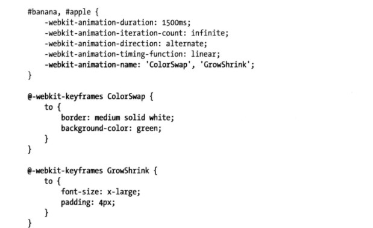
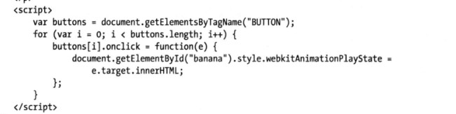
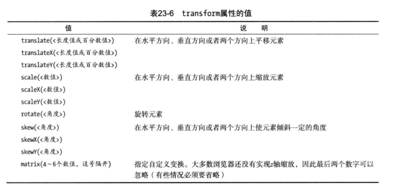
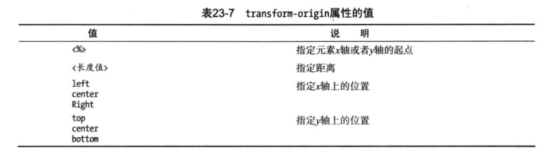

CSS3过渡、动画和变换
这三个效果都是CSS3中新增的。但因为会消耗计算机的处理能力和分散注意力，所以需要谨慎使用
过渡、动画和变换
使用过渡
过渡效果一般是由浏览器直接改变元素的CSS属性实现的。例如，使用:hover选择器，一旦用户将鼠标悬停在元素之上，浏览器就会应用跟选择器关联的属性。但CSS过渡特性允许我们控制应用新属性值的速度。过渡属性取值及说明如下：
| 属性 | 说明 | 值 |
|---|---|---|
| transition-delay | 指定过渡开始之前的延迟时间 | <时间> |
| transition-duration | 指定过渡的持续时间 | <时间> |
| transition-property | 指定应用过渡的属性 | <字符串> |
| transition-timing-function | 指定过渡期间计算中间值的方式 | ease(默认值)、linear、ease-in、ease-out、ease-in-out |
| transition | 过渡的简写属性 | - |
transition简写属性语法：transition:<transition-property> <transition-property> <transition-duration> <transition-timing-function> <transition-delay>
示例代码：
效果请参看Demo
使用动画
CSS动画本质上是增强的过渡。在如何从一种CSS样式过渡到另一种样式的过程中，你具有了更多选择、更多控制，以及更多灵活性。动画属性如下：
| 属性（要加厂商前缀） | 说明 | 值 |
|---|---|---|
| animation-delay | 设置动画开始前的延迟 | <时间> |
| animation-direction | 设置动画循环播放的时候是否反向播放 | normal、alternate |
| animation-duration | 设置动画播放的持续时间 | <时间> |
| animation-iteration-count | 设置动画的播放次数 | infinite、<数值> |
| animation-name | 指定动画名称 | none、<字符串> |
| animation-play-state | 允许动画暂停和重新播放 | running、paused |
| animation-timing-function | 指定如何计算中间动画值 | 参考过渡的动画函数可选值 |
| animation | 简写属性 | - |
animation简写属性语法：animation: <animation-name> <animation-duration> <animation-timing-function> <animation-delay> <animation-iteration-count>
动画是在两部分定义的，第一部分包含在样式声明中，使用上表列出的属性。第二部分使用@key-frames规则创建，用来定义应用动画的属性。
完整示例代码：
效果请参看CSS3动画demo
- 为多个元素应用多个关键帧
 - 停止和启动动画
animation-play-state属性可以用来停止和启动动画。如果这个属性的值为paused，动画就会停止。如果换成playing，动画就会播放。这里距离如果使用JS改变这个值

应用变换
我们可以使用CSS变换为元素应用线性变换，也就是说你可以旋转、缩放、倾斜和平移某个元素。变换的属性有：
| 属性 | 说明 | 值 |
|---|---|---|
| transform | 指定应用的变换功能 | 取值见后表 |
| transform-origin | 指定变换的起点 | 取值见后表 |
- 应用变换
我们通过transform属性为元素应用变换。这个属性允许的值是一组预定义的函数
 - 指定元素变换的起点
transform-origin属性允许我们指定应用变换的起点。默认情况下，使用元素的中心作为起点，也可以选择其他值
 将变换作为动画和过渡处理
我们可以为变换应用动画和过渡，下面是一个综合例子：123456789101112131415161718192021222324252627<html><head><meta http-equiv="Content-Type" content="text/html; charset=UTF-8"><title>RunJS</title><style type="text/css">span{border:1px solid #000;display: inline-block;}span:hover{/* Rotate div */transform:rotate(9deg);-ms-transform:rotate(9deg); /* Internet Explorer */-moz-transform:rotate(9deg); /* Firefox */-webkit-transform:rotate(9deg); /* Safari 和 Chrome */-o-transform:rotate(9deg); /* Opera */transition: all 1s 100ms;}</style></head><body><p><span>transform</span>的属性包括：rotate() / skew() / scale() / translate(,) ，分别还有x、y之分，比如：rotatex() 和 rotatey() ，以此类推。</p></body></html>效果请参看CSS3变换demo